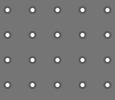
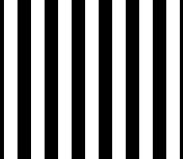
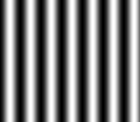

Press here to open the demo in full screen mode. See README.txt for additional info.
We recommend the Chrome browser.
Controller Options
- Stimulus
- stimulus type. {disks | bars | [sinusoids]}
- logMAR
- specification of stimulus in logMAR. disks = the angular size of central disk | bars = stripe width | sinusoids=wavelength/2
- Speed
- horizontal speed of stimulus in cycles/degree
- Direction
- horizontal direction. {[left] | right}
- Distance
- distance from display in cm. [100 cm]
- Sweep
- sweeping enabled. {[true]|false}
- Step Duration
- time spent per logMAR level
- Step Rate
- rate at stimulus size changes (logMAR change/time)
- Ratio
- ratio of (central diameter):(surround diameter)
- Central Intensity
- normalized pixel intensity of central disk
- Surround
- noramlized pixel intensity of surround disk
- Spacing
- spacing between disks
- Contrast
- michelson contrast
- Height (cm)
- physical screen height
- Width (cm)
- physical screen width
- Height (px)
- system reported screen height in pixels
- Width (px)
- system reported screen width in pixels
- Device Pixel Ratio
- retio between physical and logical pixels